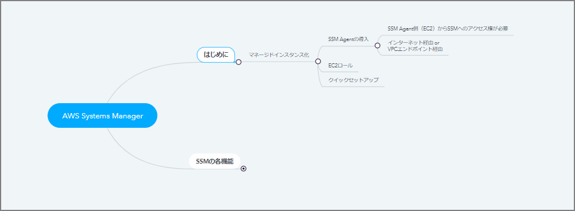
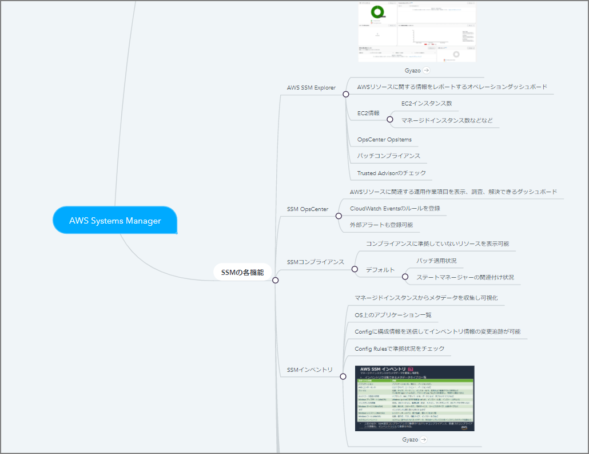
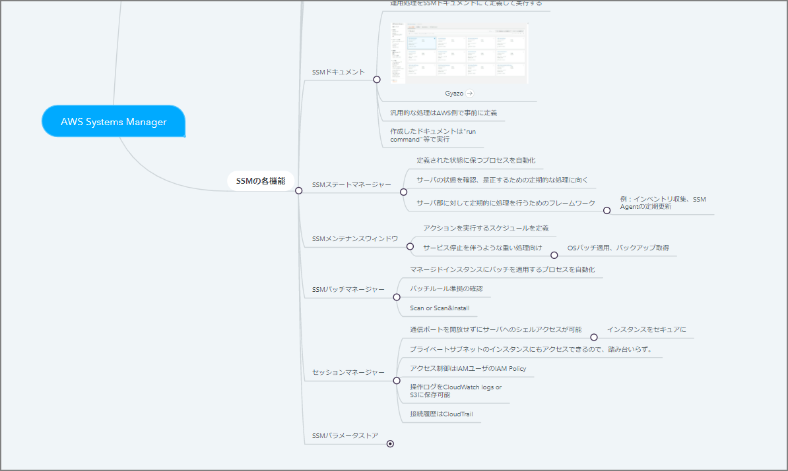

AWS Systems Managerの殴り書きメモ
はじめに
「AWS 認定 DevOps エンジニア – プロフェッショナル」に向けた勉強メモ
殴り書きメモ
AWS Systems Manager

- はじめに
- マネージドインスタンス化
- SSM Agentの導入
- SSM Agent側（EC2）からSSMへのアクセス権が必要
- インターネット経由 or VPCエンドポイント経由
- SSM Agentの導入
- マネージドインスタンス化
- EC2ロール - クイックセットアップ

-
SSMの各機能
- AWS SSM Explorer
- Gyazo
- AWSリソースに関する情報をレポートするオペレーションダッシュボード
- EC2情報
- EC2インスタンス数
- マネージドインスタンス数などなど
- OpsCenter OpsItems
- パッチコンプライアンス
- Trusted Advisorのチェック
- SSM OpsCenter
- AWSリソースに関連する運用作業項目を表示、調査、解決できるダッシュボード
- CloudWatch Eventsのルールを登録
- 外部アラートも登録可能
- SSMコンプライアンス
- コンプライアンスに準拠していないリソースを表示可能
- デフォルト
- パッチ適用状況
- ステートマネージャーの関連付け状況
- SSMインベントリ
- マネージドインスタンスからメタデータを収集し可視化
- OS上のアプリケーション一覧
- Configに構成情報を送信してインベントリ情報の変更追跡が可能
- Config Rulesで準拠状況をチェック
- Gyazo

- SSMドキュメント
- 運用処理をSSMドキュメントにて定義して実行する
- Gyazo
- 汎用的な処理はAWS側で事前に定義
- 作成したドキュメントは"run command"等で実行
- SSMステートマネージャー
- 定義された状態に保つプロセスを自動化
- サーバの状態を確認、是正するための定期的な処理に向く
- サーバ郡に対して定期的に処理を行うためのフレームワーク
- 例：インベントリ収集、SSMAgentの定期更新
- SSMメンテナンスウィンドウ
- アクションを実行するスケジュールを定義
- サービス停止を伴うような重い処理向け
- OSパッチ適用、バックアップ取得
- SSMパッチマネージャー
- マネージドインスタンスにパッチを適用するプロセスを自動化
- パッチルール準拠の確認
- Scan
- Scan&Install
- セッションマネージャー
- 通信ポートを開放せずにサーバへのシェルアクセスが可能
- インスタンスをセキュアに
- プライベートサブネットのインスタンスにもアクセスできるので、踏み台いらず。
- アクセス制御はIAMユーザのIAM Policy
- 操作ログをCloudWatch logs or S3に保存可能
- 接続履歴はCloudTrail
- SSMパラメータストア
- 構成や設定情報の管理のためのストレージ
- パスワードの機密情報をKMSで暗号化
- AWS SSM Explorer